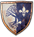
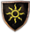

Gwent Quests Available Quests
There are a total of ten quests specifically related to Gwent, and all of them are freeform in nature. In addition, there are five Secondary Quests where one or more Gwent cards form part of the reward structure, and are usually the only chance of obtaining specific cards. Secondary Quest: High Stakes is detailed after the Gwent Quests. The other Secondary Quests are in their appropriate part of the Secondary Quests chapter Finally, when you visit the Duchy of Toussaint, there are two more Gwent quests involving the brand new Skellige Clans deck.
| Gwent quests and Secondary Quests | |
|---|---|
| Territory Location | |
|  | Secondary Quest: Gwent: Playing Innkeeps |
| Secondary Quest: Gwent: Velen Players | |
| Secondary Quest: Gwent: Big City Players | |
| Secondary Quest: Gwent: Old Pals | |
| Secondary Quest: Gwent: Playing Thaler | |
| Secondary Quest: Gwent: Skellige Style | |
|  | Secondary Quest: Gwent: Collect ‘em All |
| Secondary Quest: High Stakes | |
| Secondary Quest: A Dangerous Game | |
| Secondary Quest: A Matter of Life and Death | |
| Secondary Quest: Following the Thread | |
| Secondary Quest: Shock Therapy | |
 |
Secondary Quest: Gwent: Using your Loaf* |
| Secondary Quest: Gwent: To Everything – Turn, Turn, Tournament! | |
| Secondary Quest: Gwent: Never Fear, Skellige’s Here! | |
{kind=link}
{kind=link}
{kind=link}
{kind=link}
{kind=link}
{kind=link}
{kind=link}
(* Indicates an unmarked quest that does not appear in your Quest menu).
The Witcher® is a trademark of CD PROJEKT S. A. The Witcher game © CD PROJEKT S. A. All rights reserved. The Witcher game is based on a novel by Andrzej Sapkowski. All other copyrights and trademarks are the property of their respective owners. Learn more at thewitcher.com.